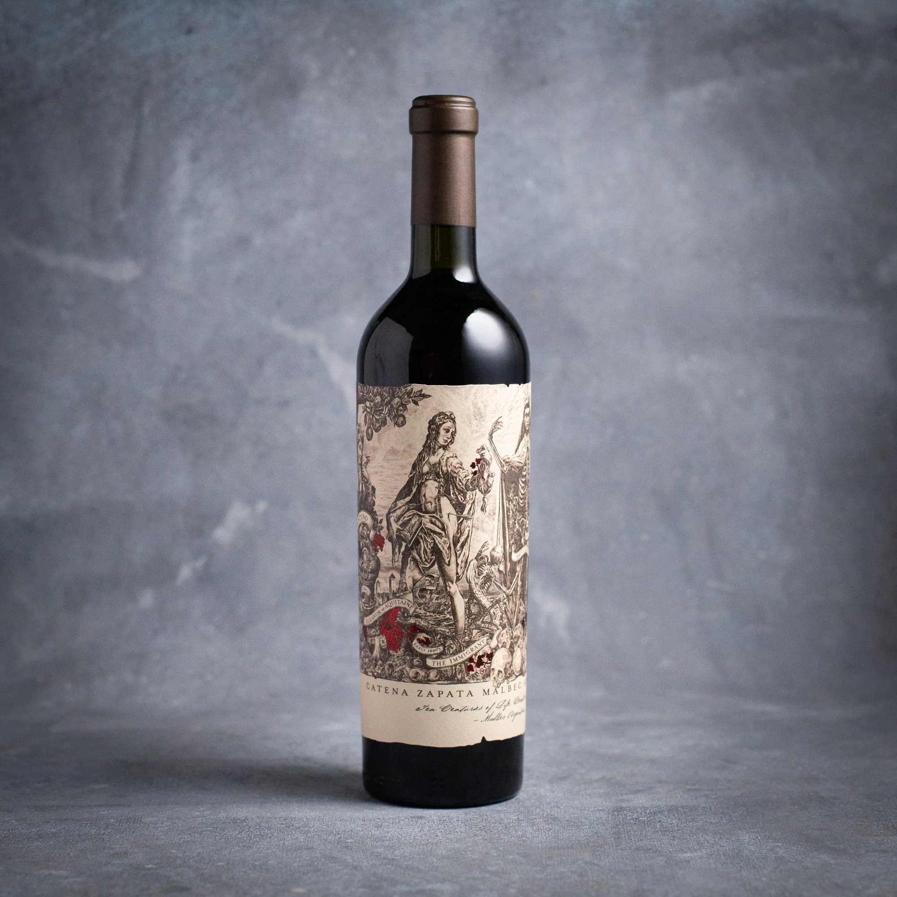
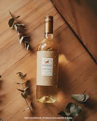
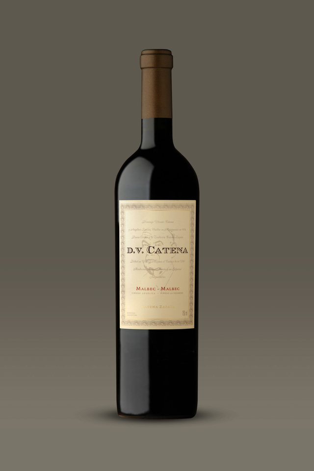
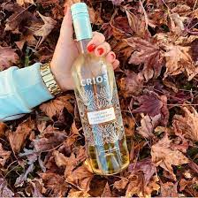
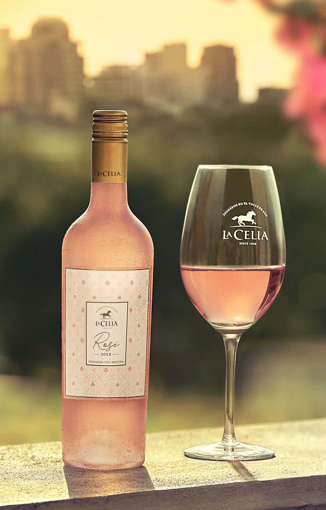
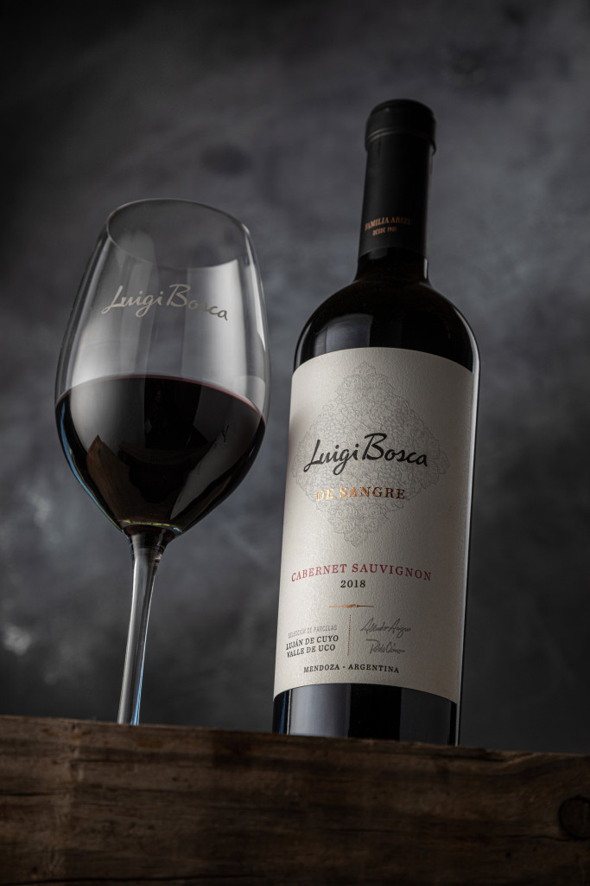
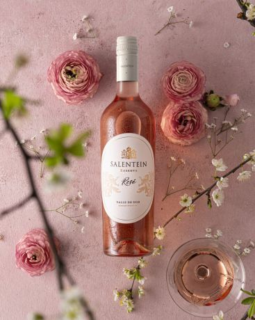
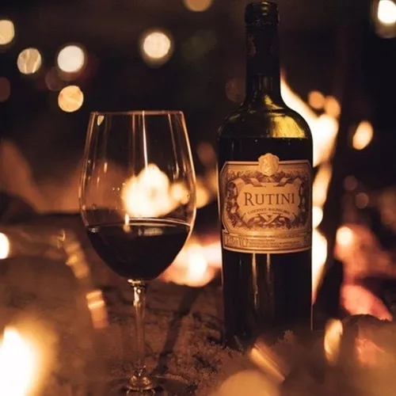

Reseña

Trapiche - Malbec
Vino seco, fruta negra muy intensa y con clara presencia de tostados. Se caracteriza por un intenso aroma a fruta negra madura.

La Celia - Pinot noir
Presenta con una mezcla de aromas a grosellas, moras, hierbas y humo de tabaco. Con un cuerpo de estructura media a completa con taninos sedosos y pulidos; capas suntuosas y sabrosas con un toque refinado al final de cáscara de limón

D.V Catena - Cabernet
Vino seco con la fruta roja como protagonista. Cuenta con un punto de acidez agradable y unos taninos medios ligeramente secantes.

Susana Balbo - Crios
Críos se cosechan en áreas específicas de Mendoza y Salta, siendo todas ellas óptimas para lograr su característico estilo frutal. Son vinos ideales para aquellos que quieren descubrir la tipicidad de cada varietal, y para los que buscan vinos de calidad a una buena relación precio-calidad.

La Celia - Rose
En el paladar se siente vibrante y persistente. Resulta ideal para tomar como aperitivo o para un maridaje con carnes blancas, mariscos, pescados o quesos suaves.

Luigi Bosca - Cabernet Sauvignon
Estamos ante un vino seco que en boca expresa de manera evidente mucha fruta negra madura.

Salentein - Rose
Aroma intenso a fruta roja (cereza) con notas balsámicas y florales.

Rutini - Malbec
Es un vino tinto que aporta elegancia y sabor, elaborado con uva de variedad 100% Malbec; este producto es procedente de una de las marcas más prestigiosas de Argentina de la región Mendoza. Este vino se caracteriza por ser intenso y complejo, con una acidez y un acabado aterciopelado que caracteriza al malbec.